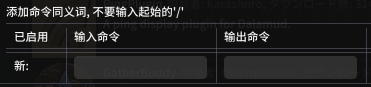
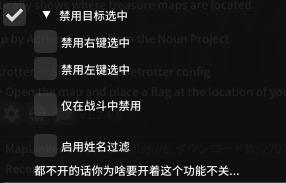
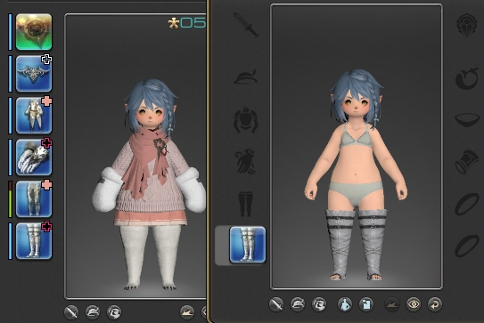
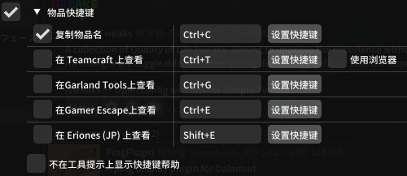
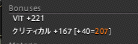
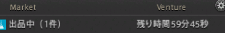
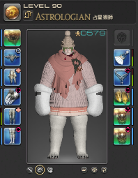

Simple Tweaks
插件原網址安裝方法，安裝後搜尋列表DalamudFontReplacer
便利小插件合集，部分使用說明(插件網址)
這插件怎麼一直在更新阿更新不完！！
插件功能總覽✦一般調整
| # | 功能 | 介紹 |
|---|---|---|
| 1 | Auto Lock Action Bars | 自動鎖定快捷欄

|
| 2 | 角色文件夾命令 | 添加命令以顯示(/chrdir)或打開(/chrdir open)本地角色文件夾 |
| 3 | Character Window Job Switcher | 角色職業等級介面可點擊切換裝備，生產系不生效 |
| 4 | 自定義同義命令 | 創建聊天欄命令的別稱以方便輸入  |
| 5 | Data Center on Title Screen | 在標題畫面顯示當前大區 |
| 6 | 禁用目標選中 | 可以禁用滑鼠左/右鍵點擊選中目標的功能  |
| 7 | Disable Mount Music Volume Change | 坐騎沒有移動時繼續撥放音樂 |
| 8 | 禁用開場動畫 | 禁用在主界面閒置過久時會撥放的開場動畫 |
| 9 | 修復/target 命令 | 允許使用/target 命令選中玩家角色或NPC |
| 10 | 固定影子距離 | 設定影子距離的值以防止其在飛行中變化 |
| 11 | Hide Mouse Cursor After Inactivity | 不活動時隱藏滑鼠 |
| 12 | Improved Crafting Log | 修改製作日誌中的合成按鈕以切換工作或從製作位置站起來，允許您在不關閉製作日誌的情況下停止製作。 |
| 13 | 增加角色預覽縮放距離 | 增加角色預覽的縮放距離，比如“試穿”和“調查” |
| 14 | 顯示婚禮長頭紗 | 婚禮頭紗顯示加長版本 |
| 15 | 快捷指令命令 | 在宏和聊天頻道中，使用'/maincommand[name]來執行任意的快捷指令 |
| 16 | 更多套装槽位 | 增加可儲存的裝備套裝數量到100 |
| 17 | Open commendation window automatically | 副本結束自動打開點讃畫面 |
| 18 | 自動打開戰利品分配窗口 | 當在副本內有獲得新物品時,自動打開戰利品分配窗口。 |
| 19 | 聊天框快捷指令 | 添加數個聊天框指令以快速修改遊戲設置 |
| 20 | Show process id Command | 顯示當前進程ID |
| 21 | Sync Crafter Bars | 讓相同效果的生產系技能放同一位置 |
| 22 | Sync Gatherer Bars | 讓相同效果的礦工園藝技能放同一位置 |
| 23 | Try On Correct Item | 按住Shift試穿投影前的物品  |
選單翻譯01

選單翻譯02

插件功能總覽✦聊天優化
| # | 功能 | 介紹 |
|---|---|---|
| 1 | 多彩玩家聊天名 | 在聊天欄中，每個玩家的名字會隨機分配一個顏色,也可以手動設置 |
| 2 | 聊天中可打開連結 | 聊天中的網址可以直接點擊 |
| 3 | 禁止聊天窗口移動 | |
| 4 | 重命名聊天欄 | 可以重新命名General跟Battle標鐵 |
| 5 | Reply Channel Switch | 輸入/r將頻道跳轉到私訊回覆 |
| 6 | 智能聊天訊息滾動 | 向上滾動時收到新訊息防止自動跳轉 |
選單翻譯

插件功能總覽✦提示優化
| # | 功能 | 介紹 |
|---|---|---|
| 1 | 物品快捷鍵 | 當顯示物品詳情時可以使用快捷鍵進行一系列操作  |
| 2 | 魔晶石状態 | 展示屬性時，顯示物品上已鑲嵌的魔品石。  |
| 3 | 精確耐久值 | 顯示裝備耐久值的準確百分比(帶小數)。 |
| 4 | 顯示分解技能 | 瀏覽可分解物品時顯示當前分解等級。 |
| 5 | 顯示食物/藥品期望值 | 基於角色當前屆性計算食物/藥品屆性增加量的期望值 |
| 6 | 顯示ID | 顯示物品及動作的對應ID |

插件功能總覽✦UI優化
| # | 功能 | 介紹 |
|---|---|---|
| Accurate Venture Times | 雇員探險倒計時  | |
| Adjust Equipment Positions | 重新定位角色菜單中的裝備位置並進行檢查以減少總體佈局。  | |
| 戰鬥對話調整 | 允許移動戰鬥中出現的對話框。 | |
| 4 | 詠唱欄修改 | 可增加滑步標示 隱藏或移動咏唱欄的特定部分 |
| 5 | 更整潔的跨界傳送菜單 | 清理跨界傳送菜單並按順序於列表中顯示當前位置。 |
| 6 | 連擊倒計時 | 顯示當前連擊結束時間 |
| 7 | 自定義部隊標籤 | 允許隱藏或自定部隊和放浪神加護。 |
| 8 | 自定義時間格式 | 修改遊戲中時鐘的時間顯示格式，使用C#的時間顯示格式 |
| 9 | 默認賣出全部的九宮幻卡 | 在賣出幻卡時，一次性出售當前幻卡的全部特有部分 |
| 10 | Duplicate Keybind Hints Between Hotbars | 當快捷欄有重複的技能或巨集，且無設置快捷鍵，自動綁定有設快捷鍵的按鍵 |
| 11 | 分解窗口增强 | 在分解窗口顯示你的當前分解等級及物品的推分解等級顯示裝備是否在套裝中，可禁止點擊套裝內裝備以防誤操作 |
| 12 | 額外傳送 | 將房屋傳送選項添加到更多位置。 |
| 13 | 隱藏即將完成的成就通知 | 完全隱藏登錄時/區域切換的“接近完成的成就”通知。 |
| 14 | 隱藏職業量譜 | 允許在非“戰鬥”和“任務”中,隱藏職業職業量譜 |
| 15 | 檢查物品等級 | 檢查其他玩家時計算他們的裝等 |
| 16 | 檢查物品等級 | 檢查其他玩家時計算他們的裝等，紅色值表示玩家穿戴的物品可以根據其等級進行同步，並顯示最高級別。 |
| 17 | 大號冷卻倒計時 | 放大快捷欄上的冷卻例計時。 |
| 18 | 限制目標狀態效果 | 設置目標狀態效果的顯示數量上限。 |
| 19 | 鎖定窗口位置 | 允許鎖定大部分界面窗口的位置 |
| 20 | 市場相關設置 | 市場交易板相關的U設置,例如含稅價格、與NPC售價的差價等。 |
| 21 | 小地圖修改 | 隱藏和修改小地圖元素 |
| 22 | 彈出通知修改 | 允許移動或隱藏在不同時間出現在屏幕中間的通知 |
| 23 | 舊版姓名牌優化 | 重置姓名牌的更改。 |
| 24 | 狀態欄調整 | 隱藏或移動特殊的狀態欄(體力、魔力) |
| 25 | 小隊列表狀態計時器 | 對小隊列表的狀態欄，添加倒計時 |
| 26 | 精筒死宮UI信息 | 刪除死宮角色面板中的冗餘信息。 |
| 27 | 記憶稱號排序方式 | 在稱號選擇界面記憶已被選擇的排序方式。 |
| 28 | 記憶稱號排序方式 | 在稱號選擇界面記憶已被選擇的排序方式。 |
| 29 | 移除”尋找同好“按鍵 | 隱藏個人信息窗口中的尋找同好按鍵。 |
| 30 | Remove Quest Marker Limit | 允許任務列表顯示超過5個任務 |
| 31 | 調整詠唱條文本位置 | 移動詠唱條的文字內容使其更容易閱讀 |
| 32 | HP欄上顯示盾值 | 在HP欄顯示大致的盾值。 |
| 33 | 顯示經驗值百分比 | 計算當前經驗值，並以百分比形式顯示在經驗值旁邊 |
| 34 | Show Gil in Inventory | 在背包底下顯示有多少錢 |
| 35 | 智能隐藏姓名板 | 提供在戰鬥中隱藏特定目標姓名板的選項 |
| 36 | 目標HP | 顯示目標的精確(或者近似)HP值。 |
| 37 | GP回復計時 | 顯示採集職業GP回復到最大值所需的大致時間。 |
| 38 | 副本等待計時 | 顯示匹配到副本後的45秒倒計時。 |